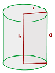

General Area Calculator
Cilindro
V = Π · r2 · h -> El volumen es igual al producto de PI (3'1416...) por el cuadrado del radio, por la altura.
En geometría, un cilindro es una superficie de las denominadas cuádricas, formada por el desplazamiento paralelo de una recta llamada generatriz a lo largo de una curva plana, que puede ser cerrada o abierta, denominada directriz del cilindro.
Si la directriz es un círculo y la generatriz es perpendicular a él, entonces la superficie obtenida, llamada cilindro circular recto, será de revolución y tendrá por lo tanto todos sus puntos situados a una distancia fija de una línea recta: el eje del cilindro. El sólido encerrado por esta superficie y por dos planos perpendiculares al eje también es llamado cilindro. Este sólido es utilizado como una superficie Gausiana.